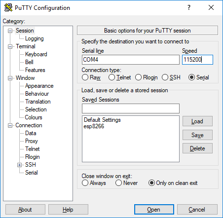

This is an update to the sixth part of a multi-part series on Micropython. I had trouble in class today uploading a .py-file to an ESP8266 microcontroller running MicroPython using a command line tool called ampy. There was a trick getting ampy to work on with the ESP8266 microcontroller that I want to share in case other people come across the same problem. In this post, I'll show you how I uploaded upload .py files to an ESP8266 microcontroller using Python and a Python package called ampy.
Before you can upload a .py-file onto the ESP8266 microcontroller, first make sure MicroPython is installed on the microcontroller.
See the MicroPython docs and a previous post on how to install MicroPython on an ESP8266 and how to install PuTTY on a Windows 10 machine. PuTTY needs to be installed on your computer to communicate with the ESP8266 running MicroPython.
- Create a new virtual environment
- Install ampy with pip
- Disable debug output on the ESP8266 MicroController
- List the files stored on the ESP8266 microcontroller
- Download files stored on the ESP8266 to your computer
- Modify boot.py to include esp.osdebug(None)
- Upload the revised boot.py file onto the ESP8266 with ampy
- Unplug and power up the ESP8266 microcontroller
- Write a main.py script
- Upload main.py onto the board
- Start the board to see the code run
- Modify the code in main.py and re-upload
- Summary
Create a new virtual environment
It is a good idea to create a new virtual environment when you start a Python project. A virtual environment is an isolated installation of Python that is separate from other Python installations running on your computer. See this post to learn how to create a virtual environment with the Anaconda Prompt. I called my new virtual environment ampy. I like to name my virtual environments with a name that corresponds to what the environment is used for.
To create a new Python virtual environment, open the Anaconda Prompt and type the following commands. Note the prompt character (the greater than sign >) does not need to be typed. It is included to indicate the Anaconda Prompt. The -n ampy portion of the command denotes the name of the virtual environment. python=3.7 ensures Python version 3.7 is installed into the ampy virtual environment.
> conda create -n ampy python=3.7
Type y for yes when prompted. After the virtual environment is created, it needs to be activated before any packages are installed into it. Activate the ampy virtual environment with the command below. Note that when the ampy virtual environment is active, (ampy) is shown in parenthesis before the prompt.
> conda activate ampy
(ampy) >
Install ampy with pip
Ampy is a command-line tool (a program that accepts text commands typed into a terminal) for uploading files onto microcontrollers running MicroPython. Ampy was created by Adafruit. Adafruit is the company that makes the ESP8266 Microcontroller I'm using. The microcontroller is called the Adafruit Feather Huzzah ESP2866. Ampy can also be used to download files stored on an ESP8266 microcontroller.
Before installing ampy, make sure to activate the virtual environment you just created. You know the virtual environment is activated because (ampy) will be shown before the prompt. The command line tool is called ampy, but you enter the command pip install ampy-adafruit to install it. Remember the prompt character > and (ampy) do not need to be typed. They are included below to indicate the Anaconda Prompt.
# if the virtual environment isn't already active
> conda activate ampy
(ampy) > pip install ampy-adafruit
(ampy) > ampy --help
If ampy is successfully installed, the command ampy --help will show some documentation about how to use the tool.
Disable debug output on the ESP8266 MicroController
Here is the gotcha- I had trouble uploading .py-files to the ESP8266 microcontroller, and I couldn't figure out why I kept getting when I ran ampy commands.
When I tried to run ampy commands, the output would show some type of error involving the web REPL. I couldn't figure out what was wrong. At first, I thought the ESP8266 microcontroller was trying to connect to WiFi, and that was the reason ampy didn't work. Then I thought maybe the version of MicroPython running on the board was out of date. But after I did a fresh MicroPython install, ampy still didn't work.
It turned out the problem had to do with a debug setting running on the ESP8266 by default. I found the section below inside the ampy documentation.
The ampy documentation says that debugging can be disabled by running the command esp.osdebug(None) at the MicroPython REPL.
So to get ampy working and upload .py-files onto the board, you first need to open PuTTY and connect to the board over a serial connection. Remember to include the correct Port and use 115200 as the baud rate.

Type the commands below into the MicroPython REPL (into the PuTTY window). Note the triple arrow prompt >>> should not be typed. The triple arrow prompt >>> is shown to denote the MicroPython prompt.
>>> import esp
>>> esp.osdebug(None)
After you type the esp.osdebug(None) command, close the PuTTY window, but don't unplug the ESP8266 microcontroller from the computer. If you unplug the microcontroller, the board will reset, and the command will not take effect. Then you'll have to type the command again before using ampy.
List the files stored on the ESP8266 microcontroller
Before you upload files on the microcontroller, it is a good idea to see what files are already stored on the microcontroller. Seeing which files are on the board is also a good test to make sure ampy works appropriately.
To see which files are on your ESP8266 microcontroller, open the Anaconda Prompt and make sure the (ampy) virtual environment is active. Then run the following command. Again, remember you don't have to type the >, which denotes the Anaconda Prompt. The port your ESP8266 is connected to may be COM4, but it might be called something else. You can use the Windows Device Manager and search under [Ports (COM & LPT)]. The ESP8266 will be listed at the bottom of the list of COM ports.
(ampy) > ampy --port COM4 --baud 115200 ls
boot.py
web_repl.py
You can see the files boot.py, and web_repl.py are currently on the board.
Download files stored on the ESP8266 to your computer
If you can successfully read which files are on the ESP8266, a next step is to download one of these files from the microcontroller onto your computer. The ampy command get is used to complete this operation. Note that when a single file name is listed before get, you only see the contents of the file. The file will not download onto your computer.
(ampy) > ampy --port COM4 --baud 115200 get boot.py
# output

To download the boot.py file onto your computer, you need to include the file name twice in the ampy get command. One time to indicate which file on the microcontroller you want to download and another time to name the file that's stored on your computer.
(ampy) > ampy --port COM4 --baud 115200 get boot.py boot.py
Now you can look at your folders and see the boot.py file you just downloaded. You can find out which folder boot.py is saved in by running the command pwd (for print working directory) at the Anaconda Prompt.
(ampy) > pwd
Modify boot.py to include esp.osdebug(None)
Next, modify the boot.py file you just downloaded so that the ESP8266 microcontroller won't run debugging automatically when it starts up.
boot.py is the file that runs first when the microcontroller is first powered up. After boot.py runs, then a file called main.py runs if it is present. We can add other .py files to the board to provide main.py some functions to work with.
You can modify boot.py on your computer and then upload the revised version of boot.py to the ESP8266. The ESP8266 will then run whatever is in boot.py the next time the microcontroller restarts.
Open boot.py on your computer with a text editor. I like to use Visula Studio Code, but another text editor like Sublime will work as well. I don't recommend using Notepad to edit the file. Notepad doesn't display the line endings correctly. So the code in Notepad is challenging to read and modify.
Edit boot.py to include the following code. Note how the lines import esp and esp.osdebug(None) are uncommented. The lines web_repl_start are commented.
# boot.py
import esp
esp.osdebug(None)
import uos, machine
#uos.dupterm(None, 1) # disable REPL on UART(0)
import gc
#import webrepl
#webrepl.start()
gc.collect()
Save the boot.py file. If you are using Visual Studio Code, you can leave the file open. If you are using another text editor, you may need to close boot.py before you can upload it to the board with ampy.
Upload the revised boot.py file onto the ESP8266 with ampy
Now you can upload the boot.py file you just edited onto the ESP8266 microcontroller using ampy. Make sure you are in the directory with the boot.py file and that you are working in the (ampy) virtual environment. The command below will upload the file to the board.
(ampy)$ ampy --port COM4 --baud 115200 put boot.py
(ampy)$ ampy --port COM4 --baud 115200 ls
(ampy)$ ampy --port COM4 --baud 115200 get boot.py
# output
The output of the ampy get command should be the code you just revised.
Unplug and power up the ESP8266 microcontroller
Now you can see if the changes you did work, and the esp.osdebug(None) command really worked.
To restart the board, unplug and then replug the board's USB cable. Once power is restored, the board runs boot.py.
Try and connect to the board with ampy again and make sure ampy still works with the board.
(ampy)$ ampy --port COM4 --baud 115200 ls
\boot.py
(ampy)$ ampy --port COM4 --baud 115200 get boot.py
# output
Write a main.py script
Now you can write a main.py script that will run on the microcontroller after boot.py executes. Open a text editor and include the following code. The code blinks the built-in LED on the ESP8266 on and off 10 times.
# main.py
import machine
import time
pin = machine.Pin(0, machine.Pin.OUT)
for i in range(10):
pin.value(1)
time.sleep(0.5)
pin.value(0)
time.sleep(0.5)
Upload main.py onto the board
After main.py is saved, you can upload main.py onto the microcontroller. You can use the same ampy put command that you used to upload boot.py onto the board.
(ampy)$ ampy --port COM4 --baud 115200 put main.py
(ampy)$ ampy --port COM4 --baud 115200 ls
\boot.py
\main.py
(ampy)$ ampy --port COM4 --baud 115200 get main.py
#output
You should see the contents of your main.py file in the terminal.
Start the board to see the code run
Unplug and replug the USB cable connected to the board to restart it. When the board restarts, it runs boot.py then main.py. After the board is plugged back in, you should see the LED on the board blink on and off 10 times.
Modify the code in main.py and re-upload
You can write any valid MicroPyton code you want in main.py. After the edits are complete, you can re-upload main.py to the board. When the board restarts, any changes you made to main.py will take effect.
You can also upload additional .py-files to the board with the same ampy put command. A typical pattern is to have very minimal code in main.py. You can use main.py to import functions from other .py-files stored on the board and run them.
Summary
In this post, I showed you how to use ampy to upload .py-files onto an ESP8266 microcontroller running MicroPython. The big gotcha we solved was that by default esp.osdebug(None) wasn't running, and therefore ampy didn't work. First, we ran the esp.osdebug(None) command at the MicroPython REPL using PuTTY. Next, we downloaded the boot.py file stored and the board and modified boot.py to include the esp.osdebug(None) command. Then we used ampy to upload the revised boot.py file onto the board. Finally, we modified a file called main.py on our computer and then uploaded this file to the board using ampy.